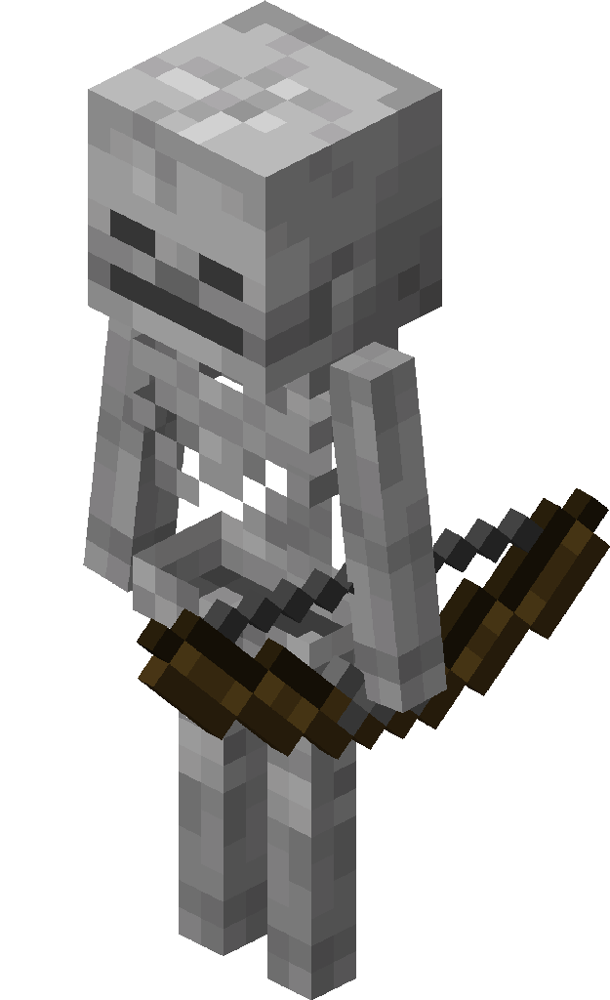
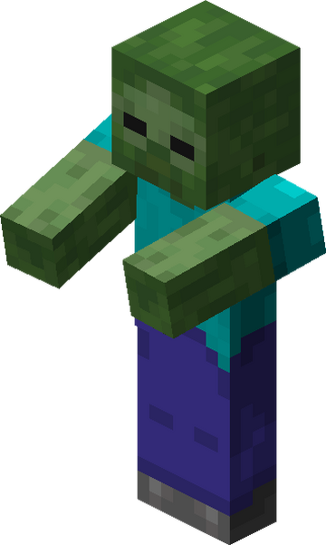
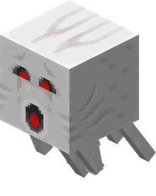
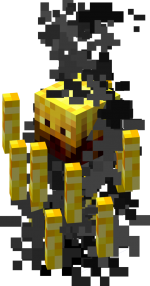
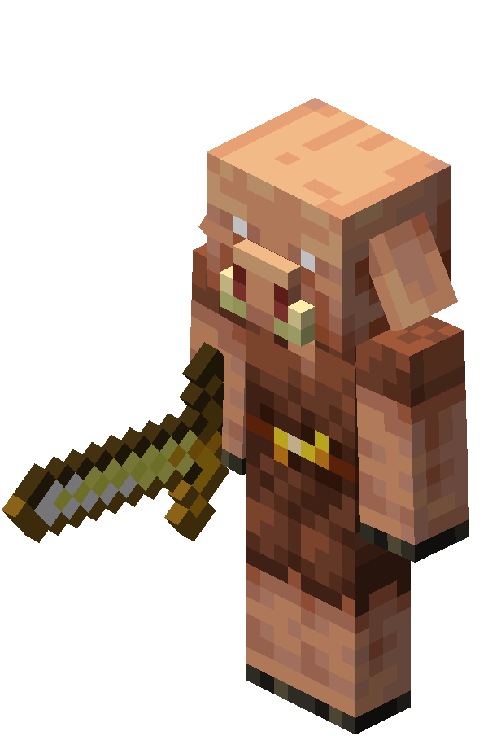
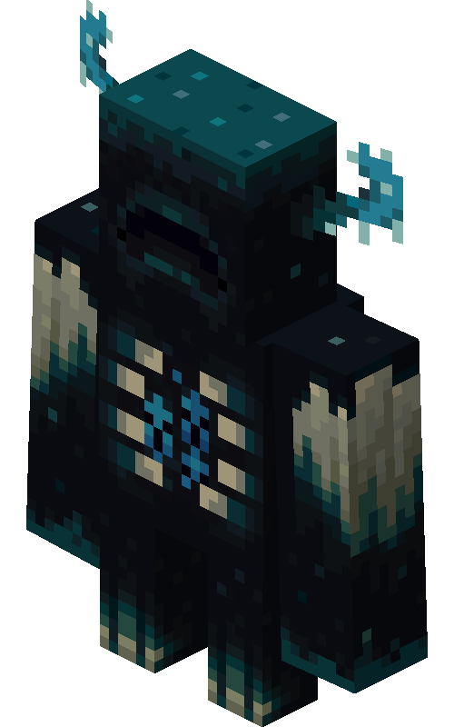

Mobs
-
Creeper

Creepers silently approach players and explode, causing sudden damage and destruction.
-
Skeleton

Skeletons attack from a distance with bows and burn in sunlight.
-
Zombie

Zombies are slow, hostile mobs that attack players and villagers, burning in daylight.
-
Ghast

Ghasts float in the Nether and shoot explosive fireballs while crying eerily.
-
Blaze

Blazes are fiery, flying mobs in Nether fortresses that shoot fire and drop Blaze Rods.
-
Piglin

Piglins are gold-loving Nether mobs that barter with players wearing gold armor.
-
Ender dragon

The Ender Dragon is the final boss that flies around the End, regenerating health from crystals.
-
Warden

The Warden is a blind, powerful mob that hunts players by sound in the Deep Dark.